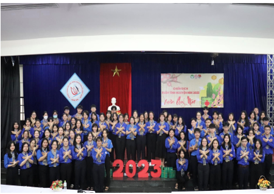
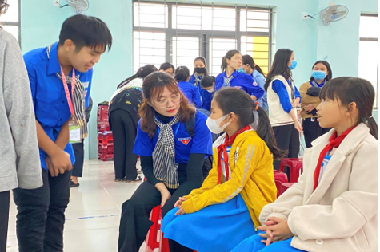
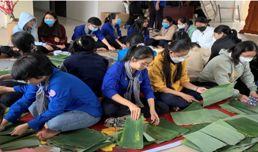
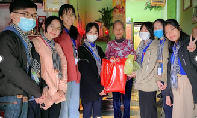
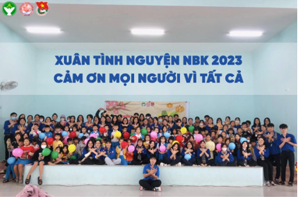

CHIẾN DỊCH XUÂN TÌNH NGUYỆN NBK 2023

Viết bởi Administrator Thứ sáu, 20 Tháng 1 2023 20:19
CHIẾN DỊCH XUÂN TÌNH NGUYỆN NBK 2023
Nhằm mục đích tạo điều kiện cho Đoàn viên, thanh niên Trường THPT chuyên Nguyễn Bỉnh Khiêm tham gia hoạt động tình nguyện trong dịp Tết, nêu cao tinh thần vì cộng đồng, chăm lo cho các đối tượng có hoàn cảnh khó khăn vui Tết, chiến dịch “XUÂN TÌNH NGUYỆN NBK 2023” chính thức được khởi động.

LỄ RA QUÂN CHIẾN DỊCH XUÂN TÌNH NGUYỆN

Chương trình “Xuân sẻ chia”

Gói 50 bánh tét, 50 bánh chưng

Trao quà và thăm cụ già neo đơn trên địa bàn thành phố Tam Kỳ
Với chiến dịch “XUÂN TÌNH NGUYỆN NBK 2023”, hy vọng rằng các chiến sĩ của Đoàn Trường THPT chuyên Nguyễn Bỉnh Khiêm sẽ luôn là những thanh niên xung kích đi đầu, không chỉ đem đến niềm vui ngày Xuân cho các hoàn cảnh khó khăn trên địa bàn tỉnh Quảng Nam mà còn lan tỏa những giá trị tốt đẹp đến mọi người xung quanh.

- 08/03/2023 18:00 - TỔ CHỨC HỌC LỚP CẢM TÌNH ĐOÀN - THÁNG THANH NIÊN 2…
- 28/02/2023 18:08 - CUỘC THI THIẾT KẾ INFOGRAPHIC TUYÊN TRUYỂN NGHỊ QU…
- 20/02/2023 20:23 - TIẾP LỬA NBK – ĐỊNH HƯỚNG NGHỀ NGHIỆP (20/02/2023)
- 16/02/2023 20:25 - TƯ VẤN CHỌN NGHỀ CHO TƯƠNG LAI (16/02/2023)
- 15/02/2023 19:22 - CÁC CLB THỂ THAO THAM GIA THI ĐẤU TẠI CÁC GIẢI THỂ…
- 17/01/2023 23:25 - CUỘC THI TÌM KIẾM TÀI NĂNG ÂM NHẠC – NBK’STAR
- 15/01/2023 22:18 - "QUẢ NGỌT" TỪ PHONG TRÀO “SÁNG TẠO TRẺ”
- 14/01/2023 21:12 - CHIẾN DỊCH XANH “NÓI KHÔNG VỚI RÁC THẢI NHỰA
- 10/01/2023 19:47 - CHƯƠNG TRÌNH “TUYÊN TRUYỀN PHÁP LUẬT” VỀ MA TUÝ VÀ…
- 09/01/2023 17:31 - CLB Từ Thiện NBK – chiến dịch tình nguyện Xuân